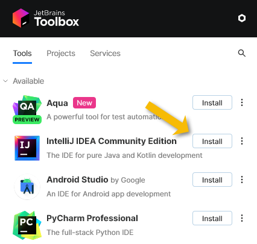
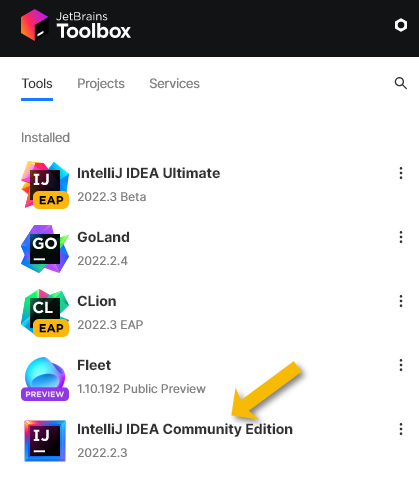

Installing IntelliJ for technical writing
Follow these steps to install IntelliJ IDEA on a PC.
This is part of the step-by-step series to set up a technical writing environment with IntelliJ and the AsciiDoc plugin. See the page Setup for technical writing for an overview of all steps.
Prerequisites
This guide assumes that IntelliJ is about to be installed on either Windows, macOS or Linux.
-
Windows: 64-bit Windows 8 or newer
-
macOS: macOS Mojave (10.14) or newer
-
Linux: 64-bit x86, glibc 2.17 (Ubuntu 18.04 or newer).
The following packages must be present:
libfuse2 libxi6 libxrender1 libxtst6 mesa-utils libfontconfig libgtk-3-bin
The installation requires an Internet connection to download about 700 MB. See Alternative installation options to install without an Internet connection.
What to install and why
This guide will install JetBrains IntelliJ IDEA Community edition, which is free, doesn’t need a subscription and is sufficient for technical writing with the AsciiDoc plugin. See Other IDEs by JetBrains below for more details.
To install it, this guide uses the JetBrains Toolbox as it allows a unified approach across all operating systems and an automated update procedure. See Alternative installation options below for alternatives.
Installing IntelliJ IDEA via the JetBrains Toolbox
Follow these steps to install IntelliJ IDEA via the JetBrains Toolbox:
-
Download the Toolbox App from the Toolbox homepage.
-
On Windows and macOS: Start the installation. On Linux: Extract the archive and start the executable.
-
After the installation, the JetBrains Toolbox is started automatically. Users can start it later like any other app from the list of installed applications.
-
Choose the button Install next to the IntelliJ IDEA Community Edition. This will download and install the IDE. The time to install depends on the speed of the internet connection to download approx. 600 MB.
 -
After the installation is complete, users can start the installed IDE like any other locally installed application or directly by clicking the IDE in the toolbox.

Next step: Continue on page Starting IntelliJ for the first time.
Other IDEs by JetBrains
The company JetBrains maintains a portfolio of different IDEs with different target audiences. Some of them are free and have “Community” in their name, others need a paid subscription. Students at universities might get a free subscription, and there are trial periods to try out the paid subscriptions.
-
The IntelliJ IDEA Community and IntelliJ IDEA Ultimate editions target Java developers.
-
For Python developers, there is PyCharm Community, PyCharm Edu and PyCharm Ultimate.
-
For web developers, there is WebStorm.
-
For Android developers, there’s Android Studio, which unfortunately requires some additional steps to enable the preview, see JCEF Preview documentation about Android Studio.
Alternative installation options
Users can also download IntelliJ IDEA from the JetBrains as an archive from the download page. This is a good option to install the IDE on a PC which doesn’t have an internet connection.
Some Linux distributions contain pre-packaged versions of the IDE, but as those sometimes lack features or components that are required by the AsciiDoc plugin’s preview. Therefore, they are not recommended.
Further reading
Continue to Starting IntelliJ for the first time for the next step of this series.